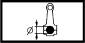

ENGINE OIL PRESS
- Path
- Technical Data > 05 DIAGNOSTICS > 0510 VARIOUS CONTROLS > ENGINE OIL PRESS
- Kind
- technical data / specifications
- Applies to
- engines: 2.0 JTS, 3.2 V6, 1.9 JTD 16V; all production periods
- Interactive page
- https://sloeber94.github.io/elrnDB-aGt/en/#/125000078
Applies to: engines: 2.0 JTS, 3.2 V6, 1.9 JTD 16V; all production periods
Big end diameter (mm) | Validity |  | ||
|---|---|---|---|---|
53.909 - 53.897 | 1.9 JTD 16V | |||
Clearance between piston - cylinder liner/bore (mm) | Validity | |||
|---|---|---|---|---|
Category B | Category C | Classe A | ||
0.039 - 0.061 | 0.042 - 0.062 | 0.038 - 0.058 | 2.0 JTS | |
Engine oil pressure at 4000 revs/min (bar) | Validity | |||
|---|---|---|---|---|
4.5 | 3.2 V6 | |||
Engine oil pressure at 4000 rpm/ (bar) | Validity | |||
|---|---|---|---|---|
> 6 | 2.0 JTS | |||
Engine oil pressure when idling (bar) | Validity | |||
|---|---|---|---|---|
0.8 | 3.2 V6 | |||
Opening (mm) | Validity |  | ||
|---|---|---|---|---|
1˚ ring | 2˚ seal | Oil scraper ring | ||
0.250 - 0.500 | 0.300 - 0.500 | 0.250 - 0.450 | 1.9 JTD 16V | |